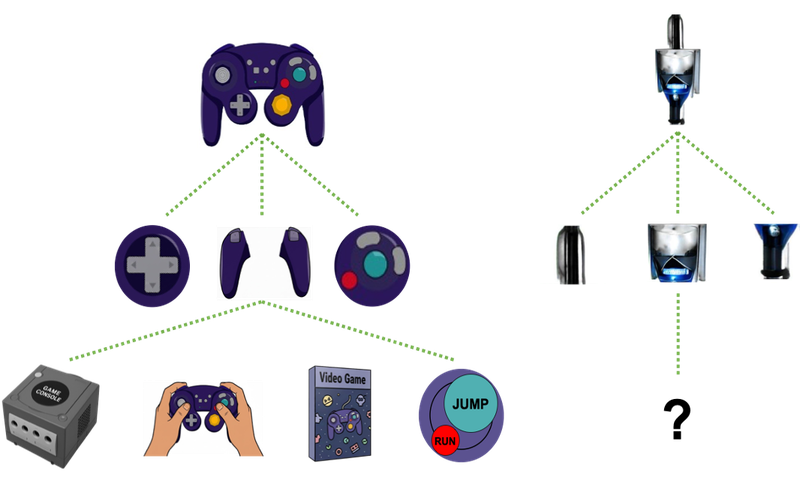
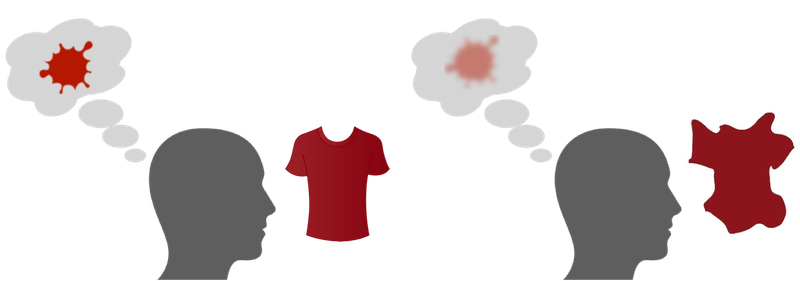
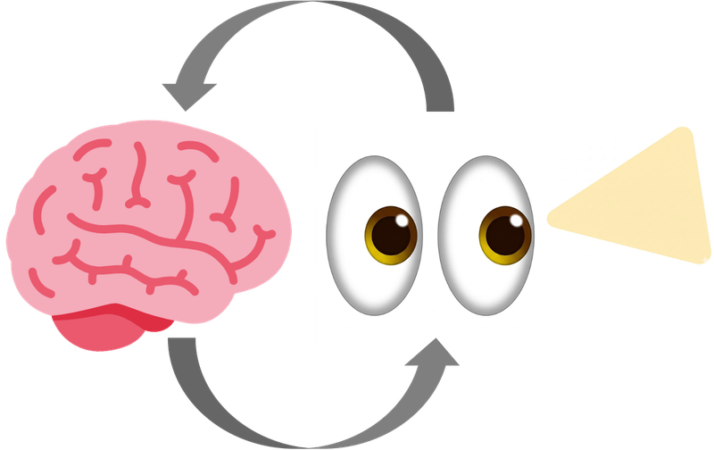

Meaningfulness benefit in visual working memory
High-level visual conceptual information can expand the representational dimensions of visual working memory contents, allowing for expanded capacity.
Related papers
- Chung, Y. H., Jung, S. S., Brady, T. F., & Störmer, V. S. (2026). Semantic understanding underlies enhanced working memory for real-world objects. PsyArXiv. Paper Link
- Chung, Y. H., Brady, T. F.*, & Störmer, V. S. (2024). Meaningfulness and familiarity expand visual working memory capacity. Current Directions in Psychological Science, 33(5), 275–282. Paper Link

Real objects can benefit feature working memory
Hierarchical structure of visual working memory representation allows high-level object representations to scaffold associated low-level features, making the feature working memory representations more distinctive themselves.
Related papers
- Chung, Y. H., Brady, T. F., & Störmer, V. S. (2026). Real-world objects scaffold feature working memory: Increased neural engagement when colors are remembered as part of meaningful objects. Journal of Cognitive Neuroscience, 38(6), 1171–1184. Paper Link
- Chung, Y. H., Brady, T. F., & Störmer, V. S. (2023). No fixed limit for storing simple visual features: Realistic objects provide an efficient scaffolding for holding features in mind. Psychological Science, 34(7), 784–793. Paper Link

Visual perception
How the visual system builds and stabilizes our perception of the world — from the time course of perceiving spatial location to the distortions and adaptations that reveal how faces and objects are represented.
Related papers
- Chung, Y. H., Anaya-Sosa, C. N., & Störmer, V. S. (2025). Testing location invariance of the flashed face distortion effect. Perception, 55(2), 159–177. Paper Link
- Chung, Y. H., & Störmer, V. S. (2023). Unveiling the time course of visual stabilization through human electrophysiology. iScience, 26(6). Paper Link